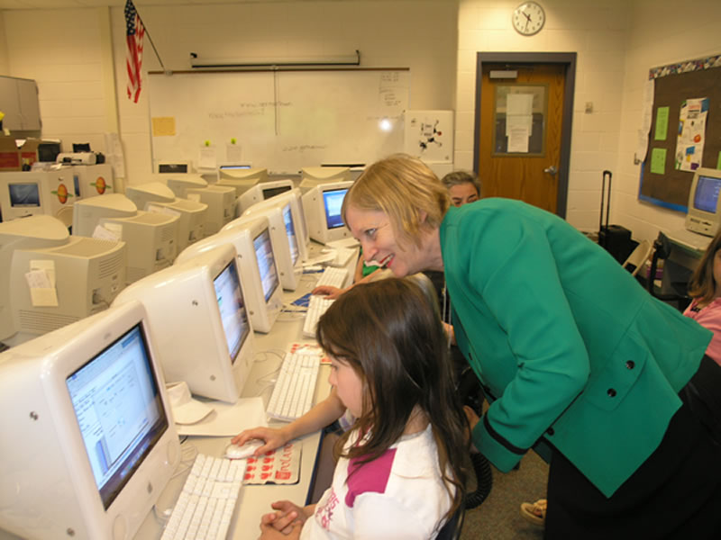
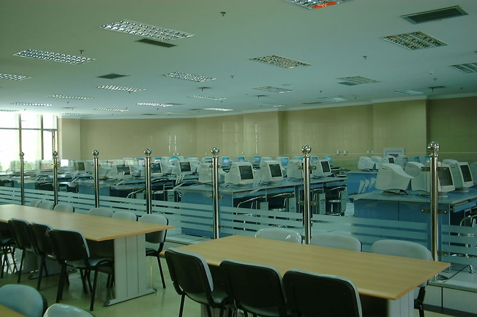

Search the Case Studies
Search the Articles
Search the Membership
Search MirandaNet
MirandaNet Fellowship Casestudy
Membership List | Publications | Research | Specialist Area List | Braided Learning Ejournal
ICT - an international perspective
Glenys Hart
Year of posting: 2011
Abstract:
The information in this article is based on visits to school through a series of programmes over the space of nearly fifteen years. Starting with the involvement in Web for Schools Project in Belgium in 1996, and Dublin in 1997, leading Teachers International Professional Developments visits to schools Poland in 2002 and ECOTEC visit 2009; Norway in 2003; Hungary (Budapest) in 2006; USA (Connecticut) 2005; China (Bejing) in 2004; Canada (Montreal) 2007. Plus visits to Italian Schools in 2000, 2001 and 2002 and participation an Arion Educational Decision makers project to Spain in 2002 on the theme of ICT in the Curriculum with staff from Belgium, England, Finland, France, Holland, Italy, Norway, Spain, Sweden and Poland. A number of visits have also been made to schools in UAE and Australia. The evidence is based on professional dialogue with colleagues at those times. ICT is a rapidly changing subject and participants were only able to discuss their own regions of their countries, however, it is possible to gain an overview of the development of ICT in learning.
Keywords:
international, professional, development, Norway, Hungary, USA, China, Canada, Italian, Spain, UAE, Australia
Study
ICT - an international perspective
The information in this article is based on visits to school through a series of programmes over the space of nearly fifteen years. Starting with the involvement in Web for Schools Project in Belgium in 1996, and Dublin in 1997, leading Teachers International Professional Developments visits to schools Poland in 2002 and ECOTEC visit 2009; Norway in 2003; Hungary (Budapest) in 2006; USA (Connecticut) 2005; China (Bejing) in 2004; Canada (Montreal) 2007. Plus visits to Italian Schools in 2000, 2001 and 2002 and participation an Arion Educational Decision makers project to Spain in 2002 on the theme of ICT in the Curriculum with staff from Belgium, England, Finland, France, Holland, Italy, Norway, Spain, Sweden and Poland. A number of visits have also been made to schools in UAE and Australia. The evidence is based on professional dialogue with colleagues at those times. ICT is a rapidly changing subject and participants were only able to discuss their own regions of their countries, however, it is possible to gain an overview of the development of ICT in learning.
1. Competency and Continuing Professional Development
Perhaps the most important aspects identified was the importance of the initial training of teachers and Continual Professional Development in ICT. There were a range of different approaches; Spain for example developed a specialised training room for staff where the teachers are trained to use software and scanners. Teachers gain professional merits and there were programmes to evaluate their newly developed skills. Training in order to achieve promotion was not obligatory in all countries.
In Czech Republic specific programmes existed for preparing and supporting the teachers to use the equipment in the classroom. The children and the teachers were improving their ICT skills together. More and more Italian teachers were able to utilise the new technologies across all subjects.
The arrangements for in service teacher training provision differ between countries. Schools in a number of countries operate a free market (Holland, Poland); that is to say schools can chose where to buy training. Other arrangements involve the receiving training from the University departments (Czech Republic, China and UAE). One region (Piemont-Italy) has training departments in different schools, each concentrating on a specific area of curricular expertise. In Flanders, the training of teachers was the responsibility of umbrella organisations for each of the three educational networks. Those networks received money from the government to provide training for the teachers. Another approach used in Spain and UK was with separate training centres operated by local government. In Spain the individual teacher's efforts were taken into account through the use of merits which improved career prospects.
France reported that in the main teachers trained themselves in the use of the new technologies. Although there was initially resistance to the new equipment it had been overcome. There are many examples where the training of the teachers in the use of ICT seemed to be the responsibility of the schools. However many teachers share the view that encouraging and rewarding teachers to use new technologies in their daily work shows a good understanding of how to change teaching practice for the better.
China accepted that teachers methods of managing their work were changing with automatic and Internet electronic files. To help teachers adapt to the changes of approach as soon as possible, 2,705 Chinese teachers were trained in advance, and 5,949 teachers attended lectures on integrating IT and subject teaching. Trials for four subject teaching methods were set up, ranging from teachers demonstrations, student learning from Internet applications and Internet sources, and studying in a dummy environment. All full-time teachers of Beijing's elementary & high schools received IT training.
The spreading of good practice was a key issue in China. Staff had sufficient time to write articles for journals, detailing how to use the new technologies in teaching and staff resource areas in schools provided a wide range of magazines for the teachers to read to improve their pedagogy. One innovative solution was the use of video conferencing for teachers to observe a lesson using the web cam and then afterwards the group were able to discuss the delivery of the lesson with the teacher.
2. Re-engineered teaching and learning
Still in many class across there was a considerable amount of teacher control of the activities. The issue is - New technologies -old approaches. One of the mismatches that we now have in our society is that students have a higher level of ICT expertise and less uncertainty than their teachers. Young people use game consoles, i-pods and mobiles phones out of school and have little fear of breaking or operating the equipment.
It is vital for teachers to change their approaches to teaching as the new technologies give students more control over the pace and direction of their own learning. It also changes the concept of a classroom as a place of learning. In Norway, there is considerable pupil autonomy, students already have more choice about where and when to learn.
Still in many classrooms there is only one teacher. The UK, Czech Republic and UAE the model of having additional classroom assistants to help the teacher is slowly spreading. Italy was using supplementary teachers before the teachers became adept in using the new technologies.
Poland, Spain, Italy, UK have software programmes that have been developed for use in schools. Norway and UK are using On-line learning and Virtual Learning Environments to provide access to school resources from home or other outside classroom access and as a platform for external communications. One local education authorities in Norway have been involved in the regional development of Virtual Learning Environments. Parts of Sweden and France use distant learning through intranets.
In China teachers learned to use word processors, whiteboards, educational applets, email, groupware and video conferencing and recognised that role of the teachers was changing to be guides, coaches, experts, resource initiators, researchers and advisors, never simply the initiators of taught knowledge. Teaching methods are change from traditional teaching methods like didactic lectures, practice, group learning and library literature searching into network teaching, individual guiding, cooperative resources research, and paperless working.
One Spanish region had purchased an Unitel unit which allowed teachers to control the computer screen plus the video. Spain and the UK have examples of Integrated Learning systems were the software reports on wrong answers to allow the teachers to plan independent learning pathways. Italy and Finland have developed the use of video conferencing as a collaborative learning tool. A reading programme in Finland using video conferencing allowed pupils to share discussions about interesting books with other students across the country.
Jo Renzulli, charismatic Director of the National Research Centre on Gifted and Talented, University of Connecticut, Storrs ,USA suggested that society has much to gain from examining its most evolved members. His mantra was ‘There is nothing so unequal as the equal treatment of unequals'. For many years Joseph Renzulli and Sally Reis focussed their work around constructing the School Enrichment model, a concept that lends itself completely to the use of information communication technology.
Whereas the schools visited in this state did not teach ICT as a formal subject, the use of computers and associated equipment was fundamental to the enhancement of individualised learning and reflected the lessons learned in the UK system. The pupils in the schools had a familiarity with the new technologies such as iPods, computer games consoles and digital cameras.
A key difference was that, in the US there was evidence of considerable national and regional infra-structures supporting the work of the schools in developing pupils' use of the technologies to the highest level. The schools utilised the principle of JIT (just in time) training. Pupils learned the skill needed when it is needed. In addition, the schools use the knowledge and expertise of the community to aid the pupil's individual development. For example, there is no expectation that the teacher would be a video editing expert.
In China there is an emphasis on the teacher providing the pupils with quality lessons but also for the pupils to learn independently outside the classroom and follow their own skills and expertise. Opportunities are provided for pupils to excel and take part in national and international competitions
In China the emphasis on using ICT as a teaching tool through the use of OHP and data projector was dramatic. The use of data projectors, not necessarily linked to a whiteboard, formed a centrepiece of many classrooms. This was often linked to a document camera, so that the projection system could display computer-generated screens, video and act as an OHP at the flick of a switch.
In terms of creativity, students produced computer art produced on Apple mac, (China, UK and US) music technology (Norway USA and UK)and electronic libraries (China, Hungary, UK). Pupils also demonstrated the use of paint (China, UK, UAE), computer games (China, UK, USA) and Internet (all).
Intensive application of IT in education was actively promoted by the Chinese government. By 1990's distance learning systems were based on radio and television broadcasts and more recently on computer networks with radio and TV education based on satellite transmitted programmes.
In order to support Flanders schools with the introduction of ICT various projects were set up. Canadian experiences with ICT in many cases provisions were with gifted children. Students were focused on developing both ICT skills and presentation skills in readiness for the demands of the 21st century. Schools entering the robot competition appeared to have the means to support their teams and create another pool what mobile workshop for their team at the competition site and one's school had pupils entering for our media competition so that it would be a whole area ECT a big hall and hand presentations and meatballs for students who had produced any at any interesting piece of media digital video was used as a technique to enable the more able to present them ideas in a more exciting and interesting formats
Italian school has a networked computer room and the older students were proficient in producing a table to write a glossary of the technical terms we were using. The data has been stored for future posting on the Internet, as the school did not yet have Internet connection.
Appropriate Resource allocation
The first step that every country had to take was to get computer equipment into the schools. Most schools had a separate ICT classrooms and in many classrooms there was least one PC. Belgium gave every school money for buying and installing ICT but there was no collaboration between schools and therefore schools chose different equipment.
Parts of France and Italy had computers in suites that were networked, developed separate rooms for CD's and put computers in the libraries. One region in Spain had developed a project where fifteen networked computers were put in each secondary school plus scanners, software and video equipment. The computers were in small clusters which encouraged teamwork. Italian and UK schools also experimented with groups of three computers in classroom to encourage collaborative working. Computer corners exist in Polish and Canadian schools.
In order to support Flemish schools with the introduction of ICT various projects were set up. Databases were developed with descriptions of Dutch educational software. The development of these databases was a collaboration between Flanders and the Netherlands.
Montréal did not have any computers in the classroom apart from those rooms dedicated and equipped for teaching keyboard and ICT skills. Some schools were well equipped for media studies course.
If you thought managing up to thousand pupils and a few hundred computers was challenging, spare a thought for Head teachers in China who routinely manage three and four thousand pupils and teachers who deliver high quality lessons to over fifty pupils. Imagine standing in a room containing 240 computers, in banks of 80 with a megaphone in your hand.
Twenty years ago the Chinese government decided to invigorate the country by spotlighting education and science. There were 240 million students in the primary and secondary schools. Enormous numbers of computers were placed in the schools. The computer pupil ratio in 1999 was 1:123, in 2001 1:51 and in 2002 was 1:35. There was a target of 1:10 in the cities meaning between 3 and 5 million computers would be needed.
The UK government has a National Grid for Learning programme which is encouraging a systematic approach to connecting schools to the Internet with broadband (2MB). A UK national initiative is the development of regional broadband consortiums and a national broadband grid. This project is to provide fast access to the internet for all schools and the ability to share curriculum content across regions and nationally. Regional government in Spain funded ASDL connections. France used ADSL, Czech Republic, Norway, Holland Finland had fibre optic connections. Sweden has a range of connections depending on the type of school. Facilities were funded by community taxes. Poland and Belgium were using ISDN. On the whole, secondary schools have computer laboratories and faster connections. In rural areas in Poland an Internet bus travels between rural schools to enable pupils to have access to the Internet. The use of the Internet varied between primary and secondary school in Italy.
Guangdong province installed gigabit networks in tertiary and many secondary institutions, with targets for completing secondary schools within the following year. Selected primary schools also had substantial networks. Genuine broadband links were available in most of the schools in this region, at much higher rates than 2Mb/s.
In China access to computers was predominantly in suites, to allow individual access for every pupil in the class, and single systems in classrooms linked to display technologies. This meant that the computer suites accommodated 60 systems up to 240 in one Learning Resource Centre. Schools across the world had a number of different seating arrangements were employed, from segmented circular tables to a hollow oval. One primary school, used individual workstations where the monitor was embedded at an angle so that the teacher could see the whole class easily.
Most of the schools in Belgium had a separate ICT room and also PC´s in all classrooms. In Belgium there was 1 PC for every 10 pupils throughout the school and not just in the ICT classroom.
Technical Support
One of the key factors preventing the use of the new technologies in classrooms is the lack of technical support. Teachers do not need to have these skills. In Belgium and France primary schools especially, had little technical expertise and knowledge to support ICT. However, there was a programme to develop co-ordination between schools for support and ICT co-ordinators to be shared between all schools including secondary and high schools. Schools in the UK were beginning to share technicians.
Conclusion
It seems that schools go through a series of steps in order to utilise ICT to support learning. The first step was to get the hardware and software into the schools, next was the training of teachers and other staff in their uses plus the continuing updating of skills as the technologies. Then came the changing styles of learning where the teacher was not necessarily the expert. The use of the new technologies led to extended classrooms where learning takes place anywhere, anytime. There was a move to collaborative learning where projects take place across different classes, schools and countries. Different countries were and still are somewhere along the continuum of technological change.
MirandaNet Members can go to the Log on/off area to edit their own casestudies.
[Back]